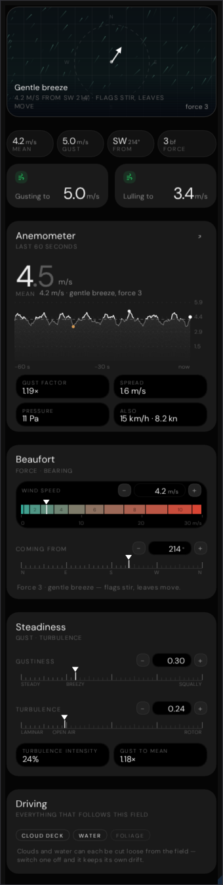
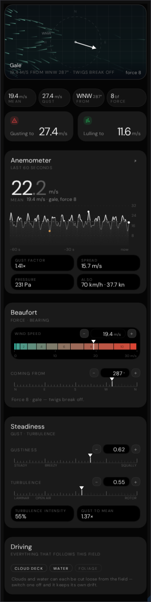
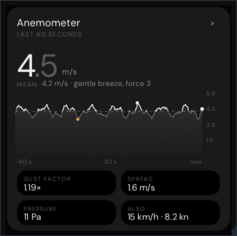
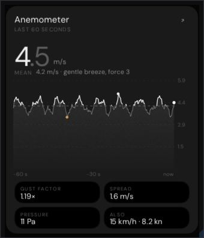
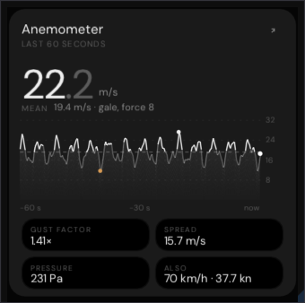
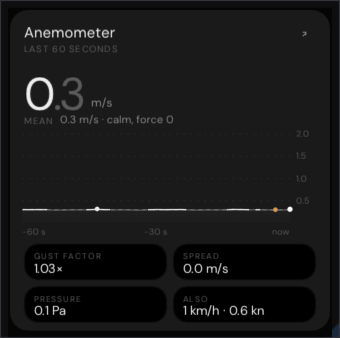

Every pixel below came out of a real ImGui draw list, rasterised on the CPU and written to PNG by
Exhibits/Workbench/Wind/NativeWindInstrument.cpp. Nothing here is a mock-up.
The source is InspectorDepot/panels/wind.js — the panel the shipped bundle actually mounts.
InspectorHost.js renders the depot panels and overrides only the light family with
LightPanel.js, which is why lights were the wrong half and wind is not. The anemometer trace is
then rewritten at build time by InstrumentSpecification.js: the green gust band becomes a
neutral wash, the stroke drops to rgba(210,210,210,.36), and the samples above the mean are
brightened in place with peak and trough dots in #eeeeee and #d69a54.
Swept to browser-sized type. ImGui bakes a face so that ascent minus
descent equals the requested size; CSS sizes the em box. For DM Sans the two differ by exactly 1.302, so
every run here used to be 23% narrower than Chrome draws it. WindInstrument::Grind now
applies the factor inside the text primitives, and the three collisions the correct type exposed are
fixed: .mp-stat is the two-column grid it always was, so a long label wraps in its own
column and both duo cards stretch to the taller one; .mp-chead .l is a flex column, so the
title and subtitle each take a full line box; and the notes wrap on the tracked advance instead of being
split by hand.
Executed, not illustrated

Hero flow field, the four-pill rail, the gusting/lulling duo, Anemometer, Beaufort, Steadiness and Driving — in the reference's own order, with .mpanel's 10 px flex gap and .pcard's own 10 px margin both applied.

A gale past 17 m/s trips the gusting-to card from --ok green to --danger red and swaps its wind glyph for the alert triangle.

4.2 m/s, gust .3, turbulence .24. Force 3, a gentle breeze.

The taller-trace button swaps the 112 px chart for 170 px; nothing else moves.

Past 12 m/s the axis labels drop their decimal, exactly as the canvas does.

The trace keeps a 2 m/s floor so a still field still has an axis to read.